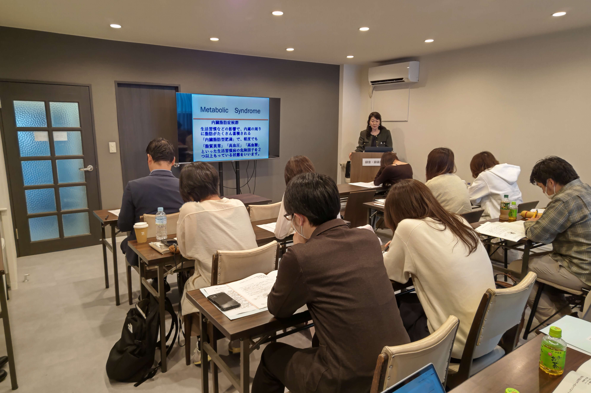
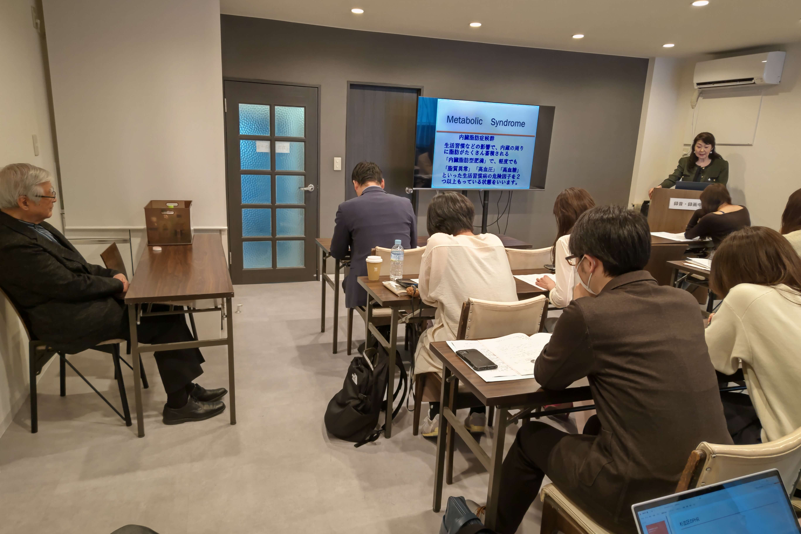
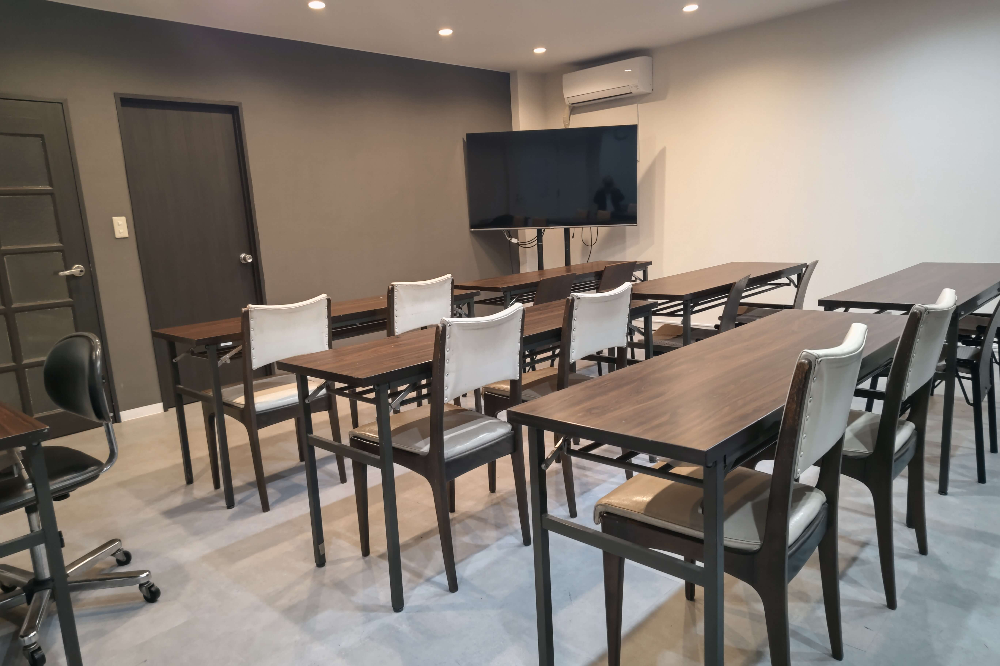
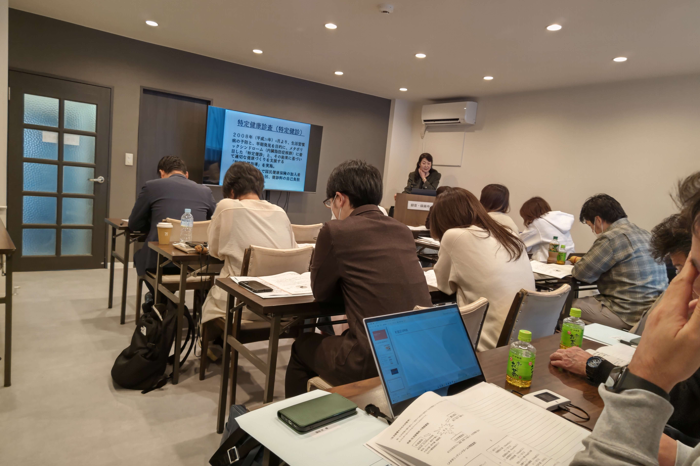
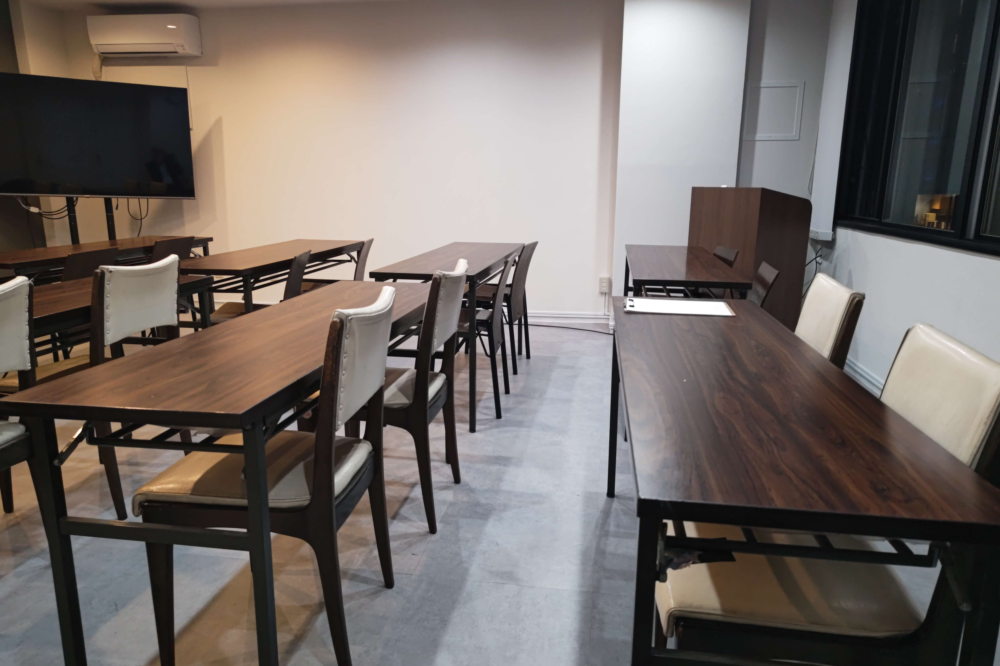

一般社団法人 日本健康医療学会主催
第21回 健康医療コーディネーター研修会・認定審査
一般社団法人 日本健康医療学会主催
第21回 健康医療コーディネーター研修会・認定審査

医師・歯科医師・看護師・一般の方まで
予防医療のスペシャリスト
「健康医療コーディネーター」取得 研修会・認定審査
主催：一般社団法人 日本健康医療学会
ハリウッド大学院大学（六本木ヒルズ）／オンライン




過去の研修会・認定審査・会場の様子（六本木ヒルズ ハリウッド大学院大学）
医療の最前線を知る医師・教授陣から学び、一生モノの「信頼」を。
民間の検定とは異なり、医師や大学教授が所属する「学会」が認定する資格です。名刺や履歴書に記載することで、あなたの信頼度は格段に向上します。
医療資格をお持ちでない一般の方も受講可能です。朝から夕方までの1日集中講座で、必要な知識を網羅。忙しい方でも無理なく取得を目指せます。
今回は当日のテストはありません。受講後、配布される問題用紙に解答し、10日以内に返送する形式です。講義をしっかり聴けば合格できる内容です。
日本健康医療学会 理事長
「健康医療コーディネーターは、自分自身の健康を守るだけでなく、周囲の人々の健康寿命延伸に寄与できる人材です。医学・歯科・介護など幅広い分野の専門家から、最新かつ正しい知識を学んでください。」
4ステップで資格取得を目指せます
申し込み後にお送りするメールに記載の銀行口座情報へ、受講料（15,000円税込）をお振り込みください。
4月中旬頃に、研修会・認定審査で使用するテキストを事前にご自宅へお送りします。当日までに目を通しておいていただくとスムーズに受講できます。
4月19日(日) 9:20～18:00に受講です。会場（ハリウッド大学院大学・六本木ヒルズ）またはZoom（オンライン）のどちらかでご参加ください。受講後、課題を提出していただければ資格取得となります。
基礎から応用まで、1日で網羅的に学習します
三大疾患
(がん・脳・心疾患)
生活習慣病
(メタボリック等)
健康長寿・高齢者介護
歯と健康
漢方医療
アンチエイジング
会場・Zoom どちらでも同じカリキュラムで受講いただけます
お申し込みはこちら会場：ハリウッド大学院大学（六本木ヒルズ内）
〒106-0032 東京都港区六本木6-10-1
六本木ヒルズ 森タワー内
東京メトロ日比谷線「六本木駅」直結
都営大江戸線「六本木駅」徒歩約4分
会場のみ先着100名／Zoomは無制限で安心してご参加いただけます
研修会・認定審査に申し込むA. はい、大丈夫です。専門用語も分かりやすく解説しますので、一般の方も多く受講されています。基礎から学べるカリキュラムになっています。
A. はい、会場参加と同じ条件で取得可能です。遠方の方や、自宅から受講したい方に推奨しています。
A. 講義をしっかり受講し、後日提出する課題に取り組んでいただければ取得できる難易度設定になっています。当日の試験はありませんので、落ち着いて取り組んでいただけます。